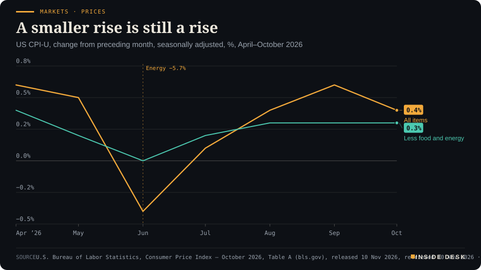
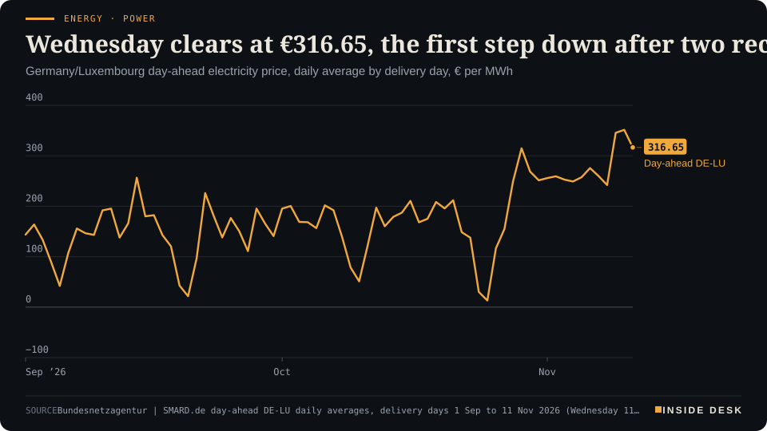

Inside Desk ePaper, Evening ePaper · Tue 10 Nov 2026
Tuesday, 10 November 2026Always free
Inside Desk
Evening ePaperPublished 17:30 CET · Berlin
Lead · Markets & Macro
The price index arrived without its annual figure and still said enough. The market did not need a twelve-month number to read a third 0.3% in a row.
US consumer prices rose 0.4% in October, core 0.3% for a third month, and two-year yields jumped. Elsewhere: €316.65 for Wednesday's power, a second day in Abu Dhabi, €8.2 billion for the job agency and a Portuguese storm alert declared a day early.
Markets · PricesA smaller rise is still a riseUS CPI-U, change from preceding month, seasonally adjusted, %, April–October 2026

Line chart of the monthly change in the US consumer price index, seasonally adjusted, from April to October 2026. All items rose 0.6% in April, 0.5% in May, fell 0.4% in June, then rose 0.1% in July, 0.4% in August and 0.6% in September. Core prices, excluding food and energy, rose 0.4%, 0.2%, 0.0%, 0.2%, 0.3% and 0.3% over the same months. In October 2026, the latest value, all items rose 0.4% and core rose 0.3%, a third straight 0.3% core reading.
Source: U.S. Bureau of Labor Statistics, Consumer Price Index – October 2026, Table A (bls.gov), released 10 Nov 2026, retrieved 10 Nov 2026 · U.S. government data, public domain · CSV
Geo-economics · p. 6
Energy & Industry · p. 10
Climate & Weather · p. 18
The day in one sentencePrices were counted, a power auction cleared and old blood samples taught us something new: the patient bookkeeping of institutions did the day's quiet work.
ContentsInside Desk · Evening ePaper10 November 2026
US consumer prices rose 0.4% in October, core 0.3% for a third month, and two-year yields jumped. Elsewhere: €316.65 for Wednesday's power, a second day in Abu Dhabi, €8.2 billion for the job agency and a Portuguese storm alert declared a day early.
11 edition pieces · 11 desks · Published 17:30 CET, 10 November 2026
22 ePaper extras, added , 10 November. They appear only in the ePaper and carry their own time.
17:30 Evening ePaper, updated live until 22:30 with an “Updated” time and a Latest page
Sun 10:00 The Sunday Magazine
Berlin time. Every issue is free.
How to read it
Swipe, use the arrow keys or the page strip. Tap any headline for the reading view. Press / to search, t for contents, +/− to zoom. Download the PDF.
LatestInside Desk · Evening ePaper10 November 2026
Latest
Live: this page and the issue are updated until 22:30 Berlin time.
Climate & Weather: IPMA puts nine districts on red and adds a red rain warning
Climate & Weather: IPMA's evening bulletin on Charles and the sting-jet risk
LeadInside Desk · Evening ePaper10 November 2026
Markets & Macro · Lead · 3 min
The price index arrived without its annual figure and still said enough. The market did not need a twelve-month number to read a third 0.3% in a row.
The morning edition warned you that October’s consumer price index would arrive with a hole where its headline usually sits. It did. At 14:30 CET the Bureau of Labor Statistics published the table, and in the column for twelve-month changes most cells simply read “-”1. No October 2025 survey was collected during last year’s lapse in appropriations, so for most series there is nothing to compare against1. Gasoline is one of the exceptions: up 37.4% on the year, unadjusted1.
What the bureau could publish was the month, and the month was firm. All items rose 0.4% on a seasonally adjusted basis after 0.6% in September1. Prices excluding food and energy rose 0.3%, “as it did in September and August”1. Economists surveyed by Dow Jones had looked for 0.3% and 0.2% respectively2; Reuters’ poll had the same 0.3% for the headline and 0.2% for core3. One tenth of a point on each, which sounds small until you remember what a tenth compounds into.
Where the tenth came from. Shelter rose 0.3% and accounted for over thirty per cent of the monthly increase1. Food rose 0.5%, with beef up 0.9% and snacks up 1.0%1. Energy rose 0.7%, far slower than September’s 5.2%, with electricity up 0.9% and piped gas down 0.8%1. Transportation services rose 0.8%; motor vehicle insurance rose 0.7%; hospital services rose 0.8%1. Used cars and trucks fell 1.2%1. That is the useful part of the release: not one shock, but many small invoices moving the same way. Before seasonal adjustment, gasoline actually fell 0.7% in October; the adjusted index still shows a 1.0% rise1. Both are true, and the bureau prints both.
How the market read it. Within the hour, the US two-year yield, the maturity most sensitive to the Fed, rose 15 basis points to 4.69%, and the ten-year rose 9 basis points to 4.96%, according to Reuters3. The Nasdaq fell 1% and the S&P 500 0.6%; the dollar index rose 0.3% to 102.01; gold fell 2% to $4,057 an ounce3. CME FedWatch went to a fully priced quarter-point hike at the 8–9 December meeting, with odds of a half-point move at 13.6%, from around zero before the release, CNBC reported2. LSEG data showed traders fully pricing two 25-basis-point rises by March4.
LeadInside Desk · Evening ePaper10 November 2026
Markets · PricesA smaller rise is still a riseUS CPI-U, change from preceding month, seasonally adjusted, %, April–October 2026
Line chart of the monthly change in the US consumer price index, seasonally adjusted, from April to October 2026. All items rose 0.6% in April, 0.5% in May, fell 0.4% in June, then rose 0.1% in July, 0.4% in August and 0.6% in September. Core prices, excluding food and energy, rose 0.4%, 0.2%, 0.0%, 0.2%, 0.3% and 0.3% over the same months. In October 2026, the latest value, all items rose 0.4% and core rose 0.3%, a third straight 0.3% core reading.
Source: U.S. Bureau of Labor Statistics, Consumer Price Index – October 2026, Table A (bls.gov), released 10 Nov 2026, retrieved 10 Nov 2026 · U.S. government data, public domain · CSV
The speech had come first. In London on Tuesday morning, Fed Governor Christopher Waller said he would back a 25-basis-point rise in December even if October improved, and added that if core inflation came in “around 0.3 percent or even higher”, a 50-basis-point hike “should be considered”, since hiking only 25 would “put our credibility at risk”5. It came in at 0.3%1. Desk arithmetic: by the governor’s own test, the condition for discussing the bigger step has been met; whether the committee takes it is a decision for 9 December, not for a Tuesday afternoon.
Europe kept most of its morning. The day had started with relief: Brent fell more than 3% and dipped below $90 a barrel for the first time since late August, and the STOXX 600 traded within 1% of its record4. After the print, Reuters had the STOXX 600 up 0.6%, off its session highs4. The DAX, which closed Monday at 26,267.19, touched 26,633.78 during the day; the latest quote this desk fetched before writing was 26,473.63, up 0.81%6. A settled close was not yet available at the time of writing.
What this means for you. Resist the two loud readings. One says the missing annual figure makes the report meaningless; it does not, because a third 0.3% core month is a pattern, not a rounding error1. The other says a hot print is a crisis; it is not, because the machinery worked exactly as designed: data at 14:30, yields repriced within the hour, a committee meeting in four weeks with the evidence on the table. If you carry a dollar loan or a variable rate tied to US policy, the number that moved today is the two-year, not the index. If your savings are in euros, the more useful line is that oil fell further on the same day4.
The next instalments are already scheduled: producer prices on Friday 13 November at 14:30 CET7, and November’s CPI on 10 December, the day after the Fed decides1. Between them sits a holiday, a meeting and a great many invoices. Nothing here is investment advice.
Geo-economicsInside Desk · Evening ePaper10 November 2026
Geo-economics · 2 min
China's surplus crossed a trillion dollars with two months to spare. The more interesting number was on the other side of the ledger.
China’s customs office published its October tables on Tuesday, and the headline did what headlines do. Exports were $412.3 billion, up 35.2% on the year; imports were $307.1 billion, up 41.6%; the month’s surplus was $105.3 billion1. For January to October, the surplus reached $1.04 trillion, the fastest China has ever reached that mark, against a record $1.2 trillion for all of 20251,2.
Now the quieter half. Imports beat forecasts by a distance: a Caixin survey of 11 institutions expected 31.6% growth, and Reuters-polled economists around 32%2,3. CNBC’s calculation from the official figures put high-tech imports up 72% by value; crude, LNG and coal imports rose about 41%, 50% and 60%2. “Imports were still dominated by AI trade,” said Tianchen Xu of the Economist Intelligence Unit2. ING’s Lynn Song noted that surplus growth slowed to a six-month low in October because imports surged2.
Two cautions sit inside the same release. Caixin reports that much of the export growth came from rising prices rather than shipment volumes3. And month on month, customs shows exports down 7.8% from September and imports down 2.2%1. Desk arithmetic: $412.33 billion of exports minus $307.05 billion of imports leaves $105.28 billion, the balance customs prints.
The politics run alongside the ledger. Trading partners have pressed Beijing to lean on domestic demand, and the IMF has repeatedly urged a pivot toward consumption, while September retail sales grew only 1.1%2. Shipments to the EU rose 24.4% while imports from it fell more than 4%, a $33.4 billion monthly surplus2. Citi’s Yuanliu Hu expects export growth to slow to 8% in 2027 as base effects fade2.
For you, the contrarian reading is modest: a trillion-dollar surplus is not a weapon, and an import surge is not a rebalancing. It is a factory economy buying chips, copper and fuel to make more of what the world is ordering. The invoices are public every month. That is worth more than any speech about them.
Geo-economics · Short item · ePaper extra, added
Europe's cap on Chinese hybrids starts on 1 December. The trade figures suggest the cap was drawn for last year's traffic.
The EU agreed with Beijing last month to limit imports of Chinese hybrid vehicles over the next few years, and the curbs take effect on 1 December1. Tuesday’s trade figures show what they are up against. China’s shipments to the bloc rose 24.4% in October while its imports from the EU fell more than 4%, widening the monthly surplus to $33.4 billion1.
Brad Setser of the Council on Foreign Relations, a former US Treasury official, put the cap in numbers: 350,000 imported cars a year, above the 300,000 hybrids China exported to Europe last year but well below the roughly 800,000 annualised pace of the last three months1. “Europe still is a long way from a coherent trade and industrial policy with respect to autos,” he said1.
Geo-economics · Brief · ePaper extra, added
Caixin’s summary of Tuesday’s trade data said much of China’s export growth came from rising prices rather than volumes2. The customs product table shows it line by line. From January to October, China shipped 48,097 tonnes of rare-earth ores, metals and compounds, 8.7% less than a year earlier, for $584.3 million, 46.4% more1. Integrated circuits: 3.2% more pieces, 111.1% more value1. Fertiliser exports fell 18.8% by weight and 32.5% by value1.
Desk arithmetic: rare earths averaged about $12,150 a tonne this year against about $7,570 last year; a chip averaged about $1.13 against $0.55. Fewer tonnes at higher prices is how scarcity shows up in an invoice, long before it shows up in a speech.
Markets & MacroInside Desk · Evening ePaper10 November 2026
Markets & Macro · Short item · ePaper extra, added
Crude fell below $90 for the first time since late August. The Fed's Waller reminded London that the barrel still carries a war's paperwork.
Brent crude futures fell more than 3.2% on Tuesday and dipped below $90 a barrel for the first time since late August, Reuters reported, as investors pinned their hopes on possible peace talks between the US and Iran1. The trigger was President Donald Trump saying he plans to hold off on new military strikes1. Lower oil helped carry the STOXX 600 to within 1% of its all-time high before the US inflation figures trimmed the gains1.
The more useful line of the day came from a central banker, not a trader. In London, Fed Governor Christopher Waller said that even with more tankers passing through the Strait of Hormuz, the traffic “is moving at great expense”: insurance and the ship-to-ship transfers used to guard against attacks are reportedly adding $20 to $30 a barrel to oil prices2. He also said diesel, constrained by limited refining capacity, is not expected to ease as readily as crude2.
Desk arithmetic: if the reported $20–30 premium is right, roughly a fifth to a third of a barrel priced just under $90 is paperwork, cover and handling rather than oil. That is the part a ceasefire headline does not remove on its own; underwriters and shipowners remove it, slowly, one voyage at a time. Waller added that he was “pleased” to see energy prices off their recent highs, but said they remain “quite elevated” relative to the start of the year2. Nothing here is investment advice.
Markets & Macro · Brief · ePaper extra, added
South Korea’s Kospi rose 4.4% on Tuesday and Japan’s Nikkei 2.9%, while MSCI’s broadest index of Asia-Pacific shares gained 2%, moving away from the seven-month low it hit last week, Reuters reported1. XTB attributed the strongest gains to the markets most exposed to semiconductors, with SK hynix, Samsung, Kioxia and Tokyo Electron among the movers, and noted that TSMC reported October revenue up 59.7% on the year2.
The rebound followed last week’s sell-off after the US midterms1. XTB’s own reading was cautious: the move “still looks more like a powerful relief rally” than a trend reversal2. That is the right temperament. A monthly revenue line from a foundry is an invoice; an index jump is an opinion about it. Nothing here is investment advice.
Politics & InstitutionsInside Desk · Evening ePaper10 November 2026
Politics & Institutions · 2 min
While the coalition argues about electricity tax, the latest draft of the 2027 budget quietly raises a loan to the Federal Employment Agency to €8.2 billion. That is where the labour market shows up in the books.
The loudest fight in Berlin this week is about electricity tax. The more telling number sits in a document most people will never read. According to the latest draft amendments for the 2027 budget, sent out late on Monday evening and seen by the Tagesspiegel, the government has registered further spending, including a much larger loan to the Federal Employment Agency “because of the situation on the labour market”1. The loan rises by €3 billion to €8.2 billion1.
What the line says. The agency pays unemployment benefit out of contributions. When it borrows from the federal budget, it is because claims are running ahead of income. No minister announces that in a speech. It turns up as a revised loan in the clean-up papers, which is exactly why those papers are worth reading. The same draft also tops up support for electric cars, because demand “is developing much more dynamically” than planned, and lists several defence projects that have become more expensive1.
The room is small. Merkur, citing Bild, Reuters and ZDF, puts planned spending at €555.4 billion, with new core borrowing of €118.7 billion, rising to almost €204 billion including the special funds for infrastructure and the Bundeswehr2. After the autumn tax estimate and the debt brake’s tighter limit, the arithmetic leaves about €1.4 billion of room2. Against that, coalition leaders were still negotiating overnight, and the budget committee’s traditionally long clean-up session starts on Thursday2.
The two lists. The SPD wants to win back cuts to child maintenance advances, parental allowance and housing benefit, and insists everything be “solidly” financed1. The CSU’s Alexander Hoffmann says: “We want to present a genuine savings budget in 2027”1. Desk arithmetic: the €3 billion added for the job agency alone is about twice the €1.4 billion of room reported1,2.
For you, the useful habit this week is to read the amendments, not the interviews. A loan to the Federal Employment Agency is not a scandal. …
Politics & Institutions · Short item · ePaper extra, added
The CDU wants a cut for every household, the states want the EU minimum, and the SPD wants to know who pays.
Two days before the budget committee’s clean-up session, the electricity tax is still the main sticking point between CDU/CSU and SPD1,2. A cut for all households would cost the state around €5 billion in lost revenue, the Tagesspiegel reports, and no plan to cover it has been presented1.
The pressure. The state parliamentary group leaders want the tax lowered to the European minimum for everyone. …
Hungary’s national asset protection and recovery office and the police detained four people and searched homes in Budapest and Pest county, the Guardian reports1. Prime Minister Péter Magyar, speaking in Berlin, linked one arrest to Áron Orbán, 49, the former prime minister’s brother: “Three ex-ministers of Orbán are already in custody”1. Police say the four are suspected of helping more than 100 Vietnamese citizens obtain visas at Hungary’s missions in Vietnam in 2024, in exchange for a recruitment fee1.
Viktor Orbán called it a “political witch-hunt” and said: “I am the real target”1. The three former ministers detained in earlier cases, including ex-central bank governor György Matolcsy, deny wrongdoing1. The test of the new office is not the arrests. It is whether the cases hold up in court.
Psychology & BehaviourInside Desk · Evening ePaper10 November 2026
Psychology & Behaviour · 2 min
A Cincinnati study links a stress-hormone pattern to PTSD-like behaviour in female rats. The press release says biomarker. The methods section says: promising, small, and not yet tested in people.
The Annex reads the method behind the headline. Today’s: a University of Cincinnati press release saying a stress-hormone pattern “may signal vulnerability” to PTSD in females, and could help explain why women are diagnosed at roughly twice the rate of men1. The paper, by Emily Devine, James Herman and colleagues, appeared in Frontiers in Cellular Neuroscience2.
The design. Young adult Sprague-Dawley rats were first given a mild stressor, six minutes in a light-dark box, and their blood hormone corticosterone was measured at 15, 30, 60 and 120 minutes2. Three weeks later half of them went through “single prolonged stress”: two hours of restraint, a 20-minute group swim and ether to unconsciousness, a standard rodent model of trauma2. Then came anxiety and fear tests, including how well the animals “unlearned” a fear after the tone stopped predicting a shock2. There were 20 animals per group2.
The result. In females, those with the strongest hormone response to the mild stressor showed more anxiety-like behaviour, worse fear extinction and stronger return of fear after trauma2. Low resting hormone plus a high spike predicted the worst outcomes1,2. In males, stress reactivity did not predict outcomes in the same way1.
The footnotes that matter. The headline comparison used only the top and bottom quarters of responders: five animals per group2. In the correlation analysis, “none survived” correction for multiple testing, which the authors put down to many variables and a small sample; they then used permutation tests to check the direction of the effects2. Males and females were run in separate cohorts three months apart, so, the authors write, “we can only observe differences in stress reactivity within each sex”2. Oestrous cycle was not tracked2. And the findings are “largely correlational”2.
What the authors themselves say. Herman calls the hormone pattern a candidate biomarker, “not a diagnostic test”, and says the work is preclinical1. The press release’s own FAQ answers “Does this mean there is a blood test for PTSD?” with “Not yet”1.
Psychology & Behaviour · Short item · ePaper extra, added
A Sanger Institute study of British children finds common variants count for more as children grow, rare damaging ones for less.
A study in Nature Human Behaviour, led by Daniel Malawsky and Hilary Martin of the Wellcome Sanger Institute, followed 6,495 children from the Avon cohort in Bristol with IQ tests at ages 4, 8 and 16, PsyPost reports1. It also generated new exome data for 16,103 children and 10,140 parents1.
Two directions. Polygenic scores built from common variants explained about 11% of IQ variation at age 4 and 14% by 161. …
Researchers at the University of California San Diego analysed Instagram data from 415 college students, more than 60% with private accounts, Health Chosun reports; the study is in npj Mental Health Research1. Students with more emotional loneliness posted more between 11 p.m. and 5 a.m., showed fewer faces, used more negative captions and mentioned family and friends more often1. Social loneliness went with fewer likes and comments on others’ posts and fewer weekend posts1.
The study cannot say whether loneliness shapes posting or the other way round1. For you, the cheaper detector remains a phone call to the friend who has gone quiet.
Energy & IndustryInside Desk · Evening ePaper10 November 2026
Energy & Industry · 2 min
Tuesday's auction for Wednesday delivery cleared €34.83 below the record. Relief, yes; normal, no.
The day-ahead auction for Wednesday 11 November cleared at a German-Luxembourg daily average of €316.65 per megawatt hour, the SMARD series shows1. Desk arithmetic: that is €34.83, or about 9.9%, below Tuesday’s €351.48, the first fall after two record delivery days in a row1. It is also, on the same series, the third-highest daily average of 2026, just above the €314.85 of Thursday 29 October1. On 11 November 2025 the series stood at €96.89; Wednesday’s price is about 3.3 times that (Desk arithmetic)1.
Energy · PowerWednesday clears at €316.65, the first step down after two recordsGermany/Luxembourg day-ahead electricity price, daily average by delivery day, € per MWh

Line chart of the daily average German-Luxembourg day-ahead electricity price from 1 September to 11 November 2026, in euros per megawatt hour. It falls to €13.12 on Sunday 25 October during the storm, climbs to €314.85 on Thursday 29 October, and stays between €242.13 and €275.64 on every delivery day from 2 to 8 November. It jumps to €345.64 on Monday 9 November and €351.48 on Tuesday 10 November. The latest value is €316.65 for delivery on Wednesday 11 November, €34.83 below Tuesday but still above every delivery day before 9 November shown on the chart.
Source: Bundesnetzagentur | SMARD.de day-ahead DE-LU daily averages, delivery days 1 Sep to 11 Nov 2026 (Wednesday 11 Nov €316.65, auction of 10 Nov), retrieved 10 Nov 2026 · CC BY 4.0 · CSV
The shape went back to evening. Tuesday’s dearest hour was 08:00. Wednesday’s is 17:00 at €447.65, with 18:00 close behind at €433.591. …
Energy & Industry · Short item · ePaper extra, added
The record days are the headline. The ladder of monthly averages is the story, and gas storage explains part of it.
Single record days attract attention; monthly averages pay the suppliers. Citing Energy-Charts data, top agrar reports that the German day-ahead power price averaged €70 per megawatt hour in April, €168 in October and €277 across the first ten days of November1. Desk arithmetic: November so far is about four times April and about 65% above October.
Energy & Industry · Brief · ePaper extra, added
The Dutch TTF front-month gas contract, Europe’s benchmark, fell 0.45% to €82 per megawatt hour early on Tuesday, its lowest in a month, Investing.com reported; Britain’s NBP touched a one-month low of 205 pence per therm1. Brent crude was down $2.39 at $90.18 at the time, about 23% below its six-month high of $118 on 30 October1.
The report names two drivers: President Trump’s statement that he would hold off on new strikes against Iran, and US-brokered talks between Russian and Ukrainian officials scheduled for Tuesday, their first direct talks since February1. Both are words, not molecules. Shipping attacks near the Strait of Hormuz remain on traders’ screens, the report notes1. For you, a cheaper wholesale molecule helps when your tariff next resets, not tomorrow. Nothing here is investment advice.
Money, FX & CommitteesInside Desk · Evening ePaper10 November 2026
Money, FX & Committees · Podium vs Print · 2 min
A Fed governor asked whether a steady labour market is a well one. The same morning's pay table answered for the typical worker: wages rose 0.4%, prices rose 0.4%, and the week got shorter.
Podium
“Does a stable labor market necessarily mean it's a healthy labor market?”
Christopher J. Waller, Governor, Federal Reserve Board, Bank of England Watchers Conference, King's Business School, London, Tuesday 10 November 2026
Print0.0%
Real average hourly earnings for all employees were unchanged from September to October, seasonally adjusted.
U.S. Bureau of Labor Statistics, Real Earnings – October 2026, Tuesday 10 November 2026, 14:30 CET
The podium. Governor Christopher Waller spent most of his London speech on Tuesday not on rates but on churn. “Does a stable labor market necessarily mean it’s a healthy labor market?” he asked1. His image was a hospital: if a doctor says your mother is stable, you are relieved, but you would not call her healthy1. He described a “low hire, low fire” market, with the 6- and 12-month average payroll gains closer to 80,000 a month, and a share of unemployed looking for work for more than 27 weeks that has risen from around 18% at the end of 2022 to more than 27% through September 20261. He said plainly that he does not have the answers1.
The print. Later the same day the Bureau of Labor Statistics published a release that rarely gets a headline. Real average hourly earnings for all employees were unchanged from September to October: hourly pay rose 0.4%, and so did the consumer price index2. Real weekly earnings were also unchanged2. For production and nonsupervisory employees, real hourly pay rose 0.1%, but real weekly earnings fell 0.3% because the average workweek shrank 0.3%2. The usual year-on-year comparison is missing, for the same reason as in the CPI: no October 2025 price data were collected during the shutdown2.
The gap. The governor’s question and the bureau’s table meet at one line. A labour market can hold its employment level and still leave the person in it treading water. Desk arithmetic: a 0.4% raise minus 0.4% inflation is zero; a slightly better hourly rate times a shorter week is a smaller pay packet. That is what “stable but not healthy” looks like on a payslip.
For you. The constructive point is that both halves exist in public: a governor willing to say he is unsure, and a statistical office that prints the uncomfortable number on the same morning as the famous one. …
Money, FX & Committees · Short item · ePaper extra, added
Euro-area ministers have two candidates for Lagarde's chair and two more board seats to fill. The dull part, the procedure, is the reassuring part.
Euro-area finance ministers spent Monday evening on a personnel question that will shape your mortgage rate for years. Eurogroup President Kyriakos Pierrakakis said two candidates have been nominated to succeed Christine Lagarde as president of the European Central Bank: Klaas Knot, former head of the Dutch central bank, and Pablo Hernández de Cos, head of the Bank for International Settlements and former governor of the Bank of Spain1. Lagarde announced on 29 October that she will step down in February, nine months before her term ends1.
The presidency is not the only vacancy. Isabel Schnabel, who oversees market operations, is leaving for the International Monetary Fund, and Chief Economist Philip Lane’s term ends in May 20271. “It is possible that all three appointments will be considered together at the level of European leaders in order to facilitate consensus,” Pierrakakis said, adding he expects the process to finish by the end of the year1.
Under EU rules, the European Council appoints board members by reinforced qualified majority, on a recommendation from the Council of the EU, after consulting the European Parliament and the ECB’s Governing Council1. It is slow and it is meant to be. …
Money, FX & CommitteesInside Desk · Evening ePaper10 November 2026
Money, FX & Committees · Brief · ePaper extra, added
Before Tuesday’s consumer price index, America’s small firms had already filed their own report. The NFIB Small Business Optimism Index for October was 97.8, down 0.1 points and just below its 53-year average of 98.01. A seasonally adjusted net 33% of owners said they had raised average selling prices, and a net 37% plan to raise them, up 6 points and the highest since July 20221. A net 13% reported paying a higher rate on their latest loan, the most since August 20241.
There is a sturdier line in the same survey: 69% rated their business’s health good or excellent, and uncertainty fell 6 points to 841. Desk arithmetic: 15% excellent plus 54% good. The till is busy, the price list is under review, and the owners say so in plain numbers. Nothing here is investment advice.
Ordinary & Inherited LifeInside Desk · Evening ePaper10 November 2026
Ordinary & Inherited Life · 2 min
The ADAC's state-by-state snapshot puts the cheapest E10 in Saarland and the dearest in North Rhine-Westphalia. Diesel costs at least €2.10 in every state.
Where you fill up still matters more than when the news says oil fell. The ADAC’s comparison of the 16 federal states, a snapshot taken at 11:00 CET on Tuesday from more than 14,000 stations reporting to the Federal Cartel Office’s fuel-price transparency unit, puts the cheapest litre of Super E10 in Saarland at €1.8591. Berlin follows at €1.869, Saxony at €1.8721.
The dear end. North Rhine-Westphalia is the most expensive state for E10 at €1.972, ahead of Lower Saxony at €1.967 and Hesse at €1.9411. The ADAC puts the gap between Saarland and North Rhine-Westphalia at about 11.3 cents a litre1. Desk arithmetic: on a 50-litre tank that is about €5.65.
Diesel reads differently. Berlin is cheapest at €2.100, then Mecklenburg-Western Pomerania at €2.105 and Saxony-Anhalt at €2.108; Baden-Württemberg is dearest at €2.218, ahead of Bavaria at €2.212 and, oddly, Saarland at €2.2091. The spread is about 11.9 cents1. Desk arithmetic: the cheapest state’s diesel still costs 24.1 cents more than the cheapest state’s E10. Saarland is the cheapest place in the country for petrol and the third-dearest for diesel, a reminder that one state is not one price.
The habit that works anywhere. The ADAC repeats its timing advice: fill up shortly before 12:00, when prices are at their lowest of the day; they jump at noon and then slide slowly1. No state boundary changes that rhythm, and a price app costs nothing.
For you. You cannot move to Saarland for a tank of petrol. You can check before you drive, skip the motorway station, and keep the receipt. Over a winter that is more reliable than waiting for a barrel price to trickle down.
Ordinary & Inherited Life · Brief · ePaper extra, added
New-lease rents in German apartment buildings rose 3.5% in the third quarter from a year earlier, according to the Association of German Pfandbrief Banks (vdp), after 3.2% in the second quarter1. Prices for residential property rose only 1.0%: single-family houses 1.3%, owner-occupied flats 2.3%1. The vdp’s chief executive, Jens Tolckmitt, said the situation was worsening especially in the big cities1.
Tolckmitt blamed much higher interest rates for making property finance harder; ZDF notes ten-year mortgage rates recently climbed above 4%1. The Ifo institute expects completions below 200,000 in both 2027 and 2028, against the roughly 320,000 a year the federal building research institute BBSR says are needed to 20301. For you as a tenant: check any rent increase against the local rent index (Mietspiegel) before you sign.
Tech & ComputeInside Desk · Evening ePaper10 November 2026
Tech & Compute · 2 min
Anthropic's new top models arrive with Fermat and black holes in the press release. The line that will change budgets is the price list, cut by a fifth.
Anthropic released Claude Fable 5.2 and Claude Mythos 5.2 on Monday, US time, and the announcement leads with the spectacular: a team of about 1,000 Fable 5.2 agents formalising the proof of Fermat’s Last Theorem in 30 hours, two open problems in black-hole physics solved, three electronic devices designed from a one-paragraph prompt1. These are the company’s own claims from pre-release testing. Treat them as you would any firm’s description of its own product: interesting, unaudited, and written for the front page.
The quieter sentence. Further down, the release says the models are “available at a lower price: $8 per million input tokens and $40 per million output tokens”1. Fable 5.1 cost $10 and $50. Desk arithmetic: both rates fall by 20%. An optional fast mode, up to 2.5 times quicker, costs $16 and $801. The company also says outputs arrive up to 30% faster than with the 5.1 models1.
Why the invoice matters more than the theorem. Most organisations do not formalise number theory. They summarise contracts, check code, sort tickets. For them the useful number is cost per finished task, and Anthropic’s own guidance is telling: for most coding and knowledge work it recommends starting with its cheaper Opus 5.5, moving up to Fable only when the job demands it1. That is the advice of a supplier that knows its customers have budgets and a finance department.
What the release admits. Anthropic writes that the models “voice suspicion that they are being evaluated” more often than its recent models, which it says complicates judging how they will behave in real use, and that building evaluations that catch every failure “remains unsolved”1. That is an unusually plain line in a launch post, and the right one.
For you. If your employer pays for these tools, the 20% cut is real money at scale, and it lands on a purchase order, not in a headline. The theorems can wait for the mathematicians to check them. Nothing here is investment advice.
Tech & Compute · Brief · ePaper extra, added
Apple now sells extra AI. In Logic Pro, Creator Studio subscribers who reach their monthly limit can buy an “intelligence usage pack” for $49.99, a one-time purchase1. Apple’s support page says the packs are offered in Brazil, Canada, France, Germany, India, Mexico, the UK and the US, cannot be shared with family, and expire 12 months after purchase; unused usage rolls over from month to month, and sales are final except where the law says otherwise2.
The monthly allowance is spelled out in minimums: at least 50 images, 250 shapes or 50 presentations, if used for one feature only2. Apple’s page says some features run on Google Gemini or OpenAI models2. Read the terms before you tap “Buy More Usage”: a top-up that expires is a budget line, not a gift.
Health & CareInside Desk · Evening ePaper10 November 2026
Health & Care · 2 min
The US regulator has approved asundexian, the first factor XIa inhibitor. The trial is large and the result is clean. The harder work now moves to guidelines, prescribers and invoices.
Survive a stroke and the next worry is the second one. Even with the best guideline treatment, up to 20% of patients with a non-cardioembolic ischaemic stroke have another within five years, says Ashkan Shoamanesh of McMaster University, co-principal investigator of the trial behind Monday’s approval2. The tools to push that number down have always run into the same wall: more protection against clots has meant more bleeding.
On Monday the US Food and Drug Administration approved Bayer’s Sunharbo (asundexian), 50 mg tablets taken once a day, the first of a new class of anticoagulants called factor XIa inhibitors1. It is licensed alongside antiplatelet therapy for adults after a recent mild-to-moderate ischaemic stroke whose clot did not come from the heart, or after a high-risk transient ischaemic attack, the “mini-stroke”1. It is not approved for patients with atrial fibrillation1.
The evidence is the sort institutions should want. OCEANIC-STROKE was randomised, double-blind and placebo-controlled, with 12,327 adults started within 72 hours of symptoms1. Asundexian cut the risk of ischaemic stroke by 26% against placebo over a median 14.2 months of treatment1; TCTMD reports the absolute reduction at 2.2 percentage points through two years2. Desk arithmetic: 1 ÷ 0.022 is about 45, so on those figures roughly 45 patients would need treating to prevent one stroke over that period.
The fine print matters, and the regulator printed it. Overall major bleeding was similar to placebo, but higher in patients over 75 and in the first 90 days; gastrointestinal bleeding was more common1, at 2.7 versus 2.1 per 100 patient-years2. The drug should be paused around surgery and after clot-busting treatment, and it is not recommended with moderate or severe liver impairment1.
Then comes the dull machinery. Bayer expects to ship this month, at a list price of $748.50 for a 30-day supply, which the company says is not what most plans or patients will pay2. Desk arithmetic: that is about $24.95 a day at list. …
Health & Care · Short item · ePaper extra, added
A new WHO/Europe report looks at 20 projects in 15 countries. Its most useful line is that worry is not a diagnosis, and that support should not stop when the floodwater does.
WHO/Europe released a report on Tuesday, timed to the climate summit in Antalya, on what countries are doing about the mental-health side of climate change1. It reviews 20 interventions across 15 countries in the region, mostly support after floods and work on climate-related distress1.
The headline numbers come from an earlier survey in The Lancet Planetary Health: up to 65% of young people in Finland, France, Portugal and the United Kingdom said they worried about climate change, and up to 37% reported effects on their daily functioning1.
The most sensible sentence is a careful one. “These feelings are not, in themselves evidence of a mental health disorder,” said Ledia Lazeri, WHO/Europe’s regional adviser for mental health1. Support matters when distress becomes overwhelming or leaves people feeling powerless1.
The examples are practical rather than grand. After Slovenia’s 2023 floods, mobile mental-health teams, hotlines and community activities supported thousands of households, and kept going after the clean-up1. An Estonian-led project trained youth workers and produced self-help workbooks for 16- to 25-year-olds, without treating climate anxiety as an illness1.
The report is also honest about what it does not know: responses are fragmented, with gaps in evidence and evaluation1. For you, that is the right order of things. Write down what was tried, measure whether it helped, then build it into emergency plans1.
Health & CareInside Desk · Evening ePaper10 November 2026
Health & Care · Brief · ePaper extra, added
Benzathine benzylpenicillin is an old, cheap antibiotic that treats syphilis and strep infections and prevents rheumatic heart disease1. In Australia it is running short again. Pfizer has advised that the 1.2 million-unit Bicillin L-A order expected for November is unlikely to be available; that strength stays in shortage until 31 March 2027, and the 600,000-unit syringe until 30 November 20271,2.
The regulator’s answer is unglamorous and sensible: reserve remaining local stock for children, use the approved imports from Portugal, Spain and the UK, which are subsidised but need mixing before injection (the UK one is currently unavailable), and order only for immediate need rather than stockpile1. That is what shortage management looks like: a list, a priority order and a needle-gauge table.
Security & OrderInside Desk · Evening ePaper10 November 2026
Security & Order · 2 min
Washington calls the talks very productive, Moscow likes the order of business, and Kyiv lists prisoners and children first. Nobody has announced anything yet, which is normal.
The first trilateral session between Ukraine, Russia and the United States in Abu Dhabi ended on Tuesday afternoon. Russian state media put it at about four and a half hours, with a 40-minute break roughly two hours in, Anadolu reports1. Talks began at around 09:15 CET, and Ukraine’s Foreign Intelligence Service says they resume on Wednesday morning1,3.
The American reading. Secretary of State Marco Rubio, speaking after the G7 in France, called the talks “very productive” but said there was still a lot of work to do3. “We think the trilateral (format) should eventually include our European partners at the table as well,” he said2. Jared Kushner said at the start that Washington had “narrowed the gaps”, without details2.
The Russian reading. Foreign Minister Sergei Lavrov said in Moscow that defining “clear parameters for a future security architecture, and only then moving on to resolving the actual Russia-Ukraine conflict, is absolutely reasonable”2. That is the same order of business US officials proposed before the talks. Agreement on sequence is not agreement on substance: RFE/RL notes Moscow has given no sign of dropping its demand for all of Donbas, including land it does not hold2.
The Ukrainian reading. President Zelenskyy, in Copenhagen, said humanitarian issues such as prisoner-of-war exchanges and bringing back children were discussed, with security guarantees on the agenda3. Before the session, Steve Witkoff wrote after meeting European and Ukrainian officials that any arrangement must “provide credible security guarantees for Ukraine”3. The E3, Italy, NATO and the EU consult the US separately from the trilateral table2.
The night before. Russia attacked 10 regions overnight, hitting five major substations that move electricity between regions, Ukraine’s prime minister said3.
For you: a first day without a communiqué is not a failure. Prisoner exchanges and returned children are small, countable things. If day two produces one of them, that is more than a speech would.
Security & Order · Short item · ePaper extra, added
Paris attributes the October hacks to a Revolutionary Guards unit and wants EU sanctions. Tehran calls it baseless; Brussels says it stands ready.
France’s foreign minister Jean-Noël Barrot says Iran’s Revolutionary Guards were behind last month’s cyber-attacks on refrigeration systems in major supermarket chains, POLITICO reports1. His ministry named the unit as Shahid Kaveh; 700 food distribution sites in France were affected1. Paris prosecutors say about 20 fires were started1.
Security & Order · Brief · ePaper extra, added
While his negotiators sat in Abu Dhabi, President Zelenskyy was in Copenhagen for talks with Nordic leaders on military aid, air defence and protecting Ukraine’s energy system from Russian strikes, the Guardian reports1. Denmark announced 4.8 billion kroner (about $720 million) in military aid, without saying what it contains or when it arrives1. Zelenskyy has been urging allies to speed up deliveries of Patriot interceptors, the most effective weapon Ukraine has against ballistic missiles1.
The timing is the point. Overnight Russia hit five substations that move power between regions1. Talks decide what the war ends with; interceptors decide what is still standing when it does.
Climate & WeatherInside Desk · Evening ePaper10 November 2026
Climate & Weather · 2 min
Portugal has had one storm and is bracing for the next. The useful part is not the drama of submerged cars. It is a government declaring an alert a day early, with a list of what shuts.
Lisbon woke up wet. Between midnight and 06:00 local time on Tuesday the city’s fire brigade logged 130 weather-related call-outs, most of them flooded homes and streets, none serious; from 06:30 the Segunda Circular ring road was flooded, with pictures of submerged cars1. That was Storm Bruna, which had already battered Madeira at the weekend4.
The next one has a name too. A secondary low on Bruna’s southern flank, named Charles by Spain’s weather service, is expected to deepen quickly on Tuesday and Wednesday4. Portugal’s weather institute, IPMA, has put eight districts, Faro, Setúbal, Beja, Évora, Santarém, Lisbon, Leiria and Portalegre, under red wind warnings for Wednesday, the highest of three levels, with gusts up to 120 km/h and up to 140 km/h in the most exposed places3. Orange warnings for persistent heavy rain cover 18 districts, and waves of five to seven metres are expected off Setúbal, Lisbon and Beja3.
What deserves your attention is the paperwork. The government declared a “situação de alerta” for 11 November across the mainland on Tuesday morning, a day in advance2. Schools and non-essential public services close, outdoor activities are suspended, parks, forests and gardens are off limits, and loose structures must be secured2. Interior minister Luís Neves asked people to stay home where possible and asked employers to be understanding, reminding them of the legal right to family-care leave2.
Climate & Weather · Short item · ePaper extra, added
Energy Day in Antalya brought a target, a tracker and a rooftop declaration. The gap between pledge and policy is printed beside them, which is the useful part.
Tuesday at COP31 was Energy and Transport Day, and it began with traffic jams: more than 68,500 registered participants and another 24,500 workers trying to reach a venue about 25 kilometres from central Antalya1.
Once inside, the Turkish presidency pushed its Global Electrification Pledge: raise electricity’s share of final energy use from about 23% today to 35% by 20351. “Electrifying the global economy is now essential,” said COP31 president Murat Kurum, citing this year’s energy crisis1. The International Energy Agency will run a tracking mechanism and says 35x35 is within reach with strong political backing1.
Then the second number. A recent Climate Action Tracker analysis finds current policies lead to only 28% by 20351. It is also unclear who has signed: Climate Home News understands no list of backers is expected this week, and some fossil-fuel producers are expected to oppose any reference to clean sources in the final decision1.
Smaller, concrete things also happened. An Australia-led Global Rooftop Solar Declaration aims to double solar-powered households to 300 million by 20301. A maritime group including the ports of Esbjerg and Long Beach set a goal of 20% electricity in shipping’s energy demand by 20351. The Powering Past Coal Alliance launched partnerships to unlock more than $23 billion for countries drafting their first coal phase-out plans1.
For you, the honest reading is the gap: 35% on the podium, 28% on current policy. A pledge with a tracker attached can be checked. That is worth more than one without.
Climate & WeatherInside Desk · Evening ePaper10 November 2026
Climate & Weather · Brief · ePaper extra, added
Global insured catastrophe losses have passed $100 billion in 2026, says Steve Bowen, chief science officer at the reinsurance broker Gallagher Re: the tenth year in a row on an inflation-adjusted basis and the seventh in nominal terms1. The year had been comparatively quiet: $92 billion from January to September, the lowest nine-month total since 2019 and 29% below the ten-year average of $128 billion1.
“A decade ago, this was a huge deal. Today, it is notable, but no longer enough on its own to move the needle,” Bowen said, crediting better risk management, stronger capital, improved modelling and more disciplined pricing1. With the five-year nominal average around $150 billion, he points to $200 billion as the threshold to watch1. His caution is the useful part: the communities most exposed are often the least insured1.
Climate & Weather · Brief · ePaper extra, added
IPMA’s second bulletin on Charles, issued at 18:07 CET, says the low’s centre will most likely cross the coast between Sines and Cabo Carvoeiro on Wednesday, with “elevada incerteza” (high uncertainty) over track and strength1. Gusts of 100 to 120 km/h are expected on its southern flank, locally 140 km/h, with more than 100 mm of rain in 24 hours in places and maximum wave heights of up to 13 metres south of Cabo Raso1. At a civil-protection briefing, IPMA’s Jorge Ponte called a sting jet, a narrow descending blast that can exceed 160 km/h, “very difficult to predict”, but “on the table”2. A warning that admits what it does not know is still a warning worth taking.
Climate & Weather · Brief · ePaper extra, added
IPMA’s warning map, last updated at 19:45 CET, now shows nine mainland districts on red for Wednesday, with Castelo Branco joining the eight from earlier1. The new layer is rain: red for “precipitação forte e persistente” from 12:00 to 18:00 Lisbon time, alongside red for gusts of up to 120 km/h, locally 140 km/h1. Lusa lists Setúbal, Santarém, Lisboa, Leiria, Castelo Branco and Portalegre under the rain warning2. Wind knocks things down; persistent rain fills things up. Tomorrow asks for patience with both.
Charts and dataInside Desk · Evening ePaper10 November 2026
Charts and data
Markets · PricesA smaller rise is still a riseUS CPI-U, change from preceding month, seasonally adjusted, %, April–October 2026
Line chart of the monthly change in the US consumer price index, seasonally adjusted, from April to October 2026. All items rose 0.6% in April, 0.5% in May, fell 0.4% in June, then rose 0.1% in July, 0.4% in August and 0.6% in September. Core prices, excluding food and energy, rose 0.4%, 0.2%, 0.0%, 0.2%, 0.3% and 0.3% over the same months. In October 2026, the latest value, all items rose 0.4% and core rose 0.3%, a third straight 0.3% core reading.
Source: U.S. Bureau of Labor Statistics, Consumer Price Index – October 2026, Table A (bls.gov), released 10 Nov 2026, retrieved 10 Nov 2026 · U.S. government data, public domain · CSV
Energy · PowerWednesday clears at €316.65, the first step down after two recordsGermany/Luxembourg day-ahead electricity price, daily average by delivery day, € per MWh
Line chart of the daily average German-Luxembourg day-ahead electricity price from 1 September to 11 November 2026, in euros per megawatt hour. It falls to €13.12 on Sunday 25 October during the storm, climbs to €314.85 on Thursday 29 October, and stays between €242.13 and €275.64 on every delivery day from 2 to 8 November. It jumps to €345.64 on Monday 9 November and €351.48 on Tuesday 10 November. The latest value is €316.65 for delivery on Wednesday 11 November, €34.83 below Tuesday but still above every delivery day before 9 November shown on the chart.
Source: Bundesnetzagentur | SMARD.de day-ahead DE-LU daily averages, delivery days 1 Sep to 11 Nov 2026 (Wednesday 11 Nov €316.65, auction of 10 Nov), retrieved 10 Nov 2026 · CC BY 4.0 · CSV
Latest values
Series
Value
Date
Chart
All items
0.4%
1 Oct 2026
A smaller rise is still a rise
Less food and energy
0.3%
1 Oct 2026
A smaller rise is still a rise
Day-ahead DE-LU
316.65
11 Nov 2026
Wednesday clears at €316.65, the first step down after two records
Last data point of each series in the charts above, from the Inside Desk data archive. Sources under each chart.
Back pageInside Desk · Evening ePaper10 November 2026
Before you close the tab
The day in one sentence
Prices were counted, a power auction cleared and old blood samples taught us something new: the patient bookkeeping of institutions did the day's quiet work.
One thing you can do this week
Tonight, before the heating clicks on, walk through your home and put a hand near each radiator valve and each window frame. Note one draught and one radiator that stays cold at the top. Two small notes on paper are the start of a winter that costs less; the rest is a bleed key and a strip of draught tape.
A habit, not advice.
What went right
Researchers at Oxford Population Health, funded by Cancer Research UK, followed blood samples from more than 20,000 men and found that higher levels of certain immune-activating proteins went with a lower risk of prostate cancer 1. Higher levels of one protein, interleukin-15, were linked to a 14% lower risk seven or more years later, and in one cohort to a 26% lower risk of advanced disease 1. The study, published today in Nature Communications, compared 368 proteins in 1,434 men who later developed the cancer with 1,434 who did not 1. "The strongest immune signals were present more than seven years before diagnosis," said Professor Karl Smith-Byrne 1. The authors are careful: these are associations, not a treatment yet 1. But a decade of stored blood, patiently kept in freezers, has just told us when to look.
In euros at home
Heating oil got a little cheaper today. The Funke papers' daily table puts the litre at €1.63 on esyoil and €1.69 on Tecson on 10 November, against €1.69 and €1.74 a day earlier 2. That is up to 14 cents a litre below a week ago, but still around 80 cents above the end of October 2025 2. "An end to the high price level is not in sight," writes esyoil's Klaus Bergmann, who suggests buying part of a year's needs rather than all of it 2. Desk arithmetic: for a 2,000-litre fill, a 6-cent drop on esyoil's figure is €120; the roughly 80-cent gap to a year ago is about €1,600.
Average per-litre prices from comparison portals as reported by Berliner Morgenpost on 10 Nov 2026; your price depends on postcode, quantity and delivery charges. Nothing here is advice.
Small words
Teilmenge (part order)
Ordering only part of the heating oil you will need for the winter, instead of filling the whole tank at once 2. It spreads the price risk across two or more delivery dates: you give up the chance of catching the single best day in exchange for not catching the worst one. Heating-oil traders suggest it when prices are high and the direction is unclear 2.
Commentary for information only. Not investment, legal, tax, medical or political advice. Inside Desk is free and reader-supported. Every number is sourced in the piece it appears in.
This issue has been updated.
All articles in this edition
Markets & Macro · 3 min read
0.4%, 0.3%, and a 2-year yield up 15 basis points
The price index arrived without its annual figure and still said enough. The market did not need a twelve-month number to read a third 0.3% in a row.
The morning edition warned you that October’s consumer price index would arrive with a hole where its headline usually sits. It did. At 14:30 CET the Bureau of Labor Statistics published the table, and in the column for twelve-month changes most cells simply read “-”1. No October 2025 survey was collected during last year’s lapse in appropriations, so for most series there is nothing to compare against1. Gasoline is one of the exceptions: up 37.4% on the year, unadjusted1.
What the bureau could publish was the month, and the month was firm. All items rose 0.4% on a seasonally adjusted basis after 0.6% in September1. Prices excluding food and energy rose 0.3%, “as it did in September and August”1. Economists surveyed by Dow Jones had looked for 0.3% and 0.2% respectively2; Reuters’ poll had the same 0.3% for the headline and 0.2% for core3. One tenth of a point on each, which sounds small until you remember what a tenth compounds into.
Markets · PricesA smaller rise is still a riseUS CPI-U, change from preceding month, seasonally adjusted, %, April–October 2026
Line chart of the monthly change in the US consumer price index, seasonally adjusted, from April to October 2026. All items rose 0.6% in April, 0.5% in May, fell 0.4% in June, then rose 0.1% in July, 0.4% in August and 0.6% in September. Core prices, excluding food and energy, rose 0.4%, 0.2%, 0.0%, 0.2%, 0.3% and 0.3% over the same months. In October 2026, the latest value, all items rose 0.4% and core rose 0.3%, a third straight 0.3% core reading.
Source: U.S. Bureau of Labor Statistics, Consumer Price Index – October 2026, Table A (bls.gov), released 10 Nov 2026, retrieved 10 Nov 2026 · U.S. government data, public domain · CSV
Where the tenth came from. Shelter rose 0.3% and accounted for over thirty per cent of the monthly increase1. Food rose 0.5%, with beef up 0.9% and snacks up 1.0%1. Energy rose 0.7%, far slower than September’s 5.2%, with electricity up 0.9% and piped gas down 0.8%1. Transportation services rose 0.8%; motor vehicle insurance rose 0.7%; hospital services rose 0.8%1. Used cars and trucks fell 1.2%1. That is the useful part of the release: not one shock, but many small invoices moving the same way. Before seasonal adjustment, gasoline actually fell 0.7% in October; the adjusted index still shows a 1.0% rise1. Both are true, and the bureau prints both.
How the market read it. Within the hour, the US two-year yield, the maturity most sensitive to the Fed, rose 15 basis points to 4.69%, and the ten-year rose 9 basis points to 4.96%, according to Reuters3. The Nasdaq fell 1% and the S&P 500 0.6%; the dollar index rose 0.3% to 102.01; gold fell 2% to $4,057 an ounce3. CME FedWatch went to a fully priced quarter-point hike at the 8–9 December meeting, with odds of a half-point move at 13.6%, from around zero before the release, CNBC reported2. LSEG data showed traders fully pricing two 25-basis-point rises by March4.
The speech had come first. In London on Tuesday morning, Fed Governor Christopher Waller said he would back a 25-basis-point rise in December even if October improved, and added that if core inflation came in “around 0.3 percent or even higher”, a 50-basis-point hike “should be considered”, since hiking only 25 would “put our credibility at risk”5. It came in at 0.3%1. Desk arithmetic: by the governor’s own test, the condition for discussing the bigger step has been met; whether the committee takes it is a decision for 9 December, not for a Tuesday afternoon.
Europe kept most of its morning. The day had started with relief: Brent fell more than 3% and dipped below $90 a barrel for the first time since late August, and the STOXX 600 traded within 1% of its record4. After the print, Reuters had the STOXX 600 up 0.6%, off its session highs4. The DAX, which closed Monday at 26,267.19, touched 26,633.78 during the day; the latest quote this desk fetched before writing was 26,473.63, up 0.81%6. A settled close was not yet available at the time of writing.
What this means for you. Resist the two loud readings. One says the missing annual figure makes the report meaningless; it does not, because a third 0.3% core month is a pattern, not a rounding error1. The other says a hot print is a crisis; it is not, because the machinery worked exactly as designed: data at 14:30, yields repriced within the hour, a committee meeting in four weeks with the evidence on the table. If you carry a dollar loan or a variable rate tied to US policy, the number that moved today is the two-year, not the index. If your savings are in euros, the more useful line is that oil fell further on the same day4.
The next instalments are already scheduled: producer prices on Friday 13 November at 14:30 CET7, and November’s CPI on 10 December, the day after the Fed decides1. Between them sits a holiday, a meeting and a great many invoices. Nothing here is investment advice.
Desk comment A missing year is not a missing fact. The month was there, and the month was enough.
$1.04 trillion in ten months, and imports that finally ran faster
China's surplus crossed a trillion dollars with two months to spare. The more interesting number was on the other side of the ledger.
China’s customs office published its October tables on Tuesday, and the headline did what headlines do. Exports were $412.3 billion, up 35.2% on the year; imports were $307.1 billion, up 41.6%; the month’s surplus was $105.3 billion1. For January to October, the surplus reached $1.04 trillion, the fastest China has ever reached that mark, against a record $1.2 trillion for all of 20251,2.
Now the quieter half. Imports beat forecasts by a distance: a Caixin survey of 11 institutions expected 31.6% growth, and Reuters-polled economists around 32%2,3. CNBC’s calculation from the official figures put high-tech imports up 72% by value; crude, LNG and coal imports rose about 41%, 50% and 60%2. “Imports were still dominated by AI trade,” said Tianchen Xu of the Economist Intelligence Unit2. ING’s Lynn Song noted that surplus growth slowed to a six-month low in October because imports surged2.
Two cautions sit inside the same release. Caixin reports that much of the export growth came from rising prices rather than shipment volumes3. And month on month, customs shows exports down 7.8% from September and imports down 2.2%1. Desk arithmetic: $412.33 billion of exports minus $307.05 billion of imports leaves $105.28 billion, the balance customs prints.
The politics run alongside the ledger. Trading partners have pressed Beijing to lean on domestic demand, and the IMF has repeatedly urged a pivot toward consumption, while September retail sales grew only 1.1%2. Shipments to the EU rose 24.4% while imports from it fell more than 4%, a $33.4 billion monthly surplus2. Citi’s Yuanliu Hu expects export growth to slow to 8% in 2027 as base effects fade2.
For you, the contrarian reading is modest: a trillion-dollar surplus is not a weapon, and an import surge is not a rebalancing. It is a factory economy buying chips, copper and fuel to make more of what the world is ordering. The invoices are public every month. That is worth more than any speech about them.
Desk comment A surplus is a sentence with two halves. Read the second half too.
Europe's cap on Chinese hybrids starts on 1 December. The trade figures suggest the cap was drawn for last year's traffic.
The EU agreed with Beijing last month to limit imports of Chinese hybrid vehicles over the next few years, and the curbs take effect on 1 December1. Tuesday’s trade figures show what they are up against. China’s shipments to the bloc rose 24.4% in October while its imports from the EU fell more than 4%, widening the monthly surplus to $33.4 billion1.
Brad Setser of the Council on Foreign Relations, a former US Treasury official, put the cap in numbers: 350,000 imported cars a year, above the 300,000 hybrids China exported to Europe last year but well below the roughly 800,000 annualised pace of the last three months1. “Europe still is a long way from a coherent trade and industrial policy with respect to autos,” he said1.
China’s customs table shows the wider scale: 9.736 million motor vehicles exported from January to October, up 49.6% in units, worth $169.5 billion, up 52.2%2. In October alone, 1.108 million vehicles left the country2.
Desk arithmetic: at the recent pace, the 350,000 cap is less than half of what is arriving. That does not make the agreement worthless. A cap is a measurable promise, checked at a port by customs officers, and it can be tightened by the same procedure that set it. The test is not the press release but the monthly count from December. Elsewhere, Washington and Beijing extended their broader trade truce to January, and Presidents Xi Jinping and Donald Trump are due to meet at the APEC summit in Shenzhen next week1.
Appears only in the ePaper · Commentary for information only. Not advice.
Geo-economics · Brief · ePaper extra, added
Rare earths: 8.7% fewer tonnes, 46.4% more dollars
China's customs tables show which exports grew by weight and which grew by price.
Caixin’s summary of Tuesday’s trade data said much of China’s export growth came from rising prices rather than volumes2. The customs product table shows it line by line. From January to October, China shipped 48,097 tonnes of rare-earth ores, metals and compounds, 8.7% less than a year earlier, for $584.3 million, 46.4% more1. Integrated circuits: 3.2% more pieces, 111.1% more value1. Fertiliser exports fell 18.8% by weight and 32.5% by value1.
Desk arithmetic: rare earths averaged about $12,150 a tonne this year against about $7,570 last year; a chip averaged about $1.13 against $0.55. Fewer tonnes at higher prices is how scarcity shows up in an invoice, long before it shows up in a speech.
Appears only in the ePaper · Commentary for information only. Not advice.
Markets & Macro · Short item · ePaper extra, added
Brent under $90, and a governor who counts the insurance
Crude fell below $90 for the first time since late August. The Fed's Waller reminded London that the barrel still carries a war's paperwork.
Brent crude futures fell more than 3.2% on Tuesday and dipped below $90 a barrel for the first time since late August, Reuters reported, as investors pinned their hopes on possible peace talks between the US and Iran1. The trigger was President Donald Trump saying he plans to hold off on new military strikes1. Lower oil helped carry the STOXX 600 to within 1% of its all-time high before the US inflation figures trimmed the gains1.
The more useful line of the day came from a central banker, not a trader. In London, Fed Governor Christopher Waller said that even with more tankers passing through the Strait of Hormuz, the traffic “is moving at great expense”: insurance and the ship-to-ship transfers used to guard against attacks are reportedly adding $20 to $30 a barrel to oil prices2. He also said diesel, constrained by limited refining capacity, is not expected to ease as readily as crude2.
Desk arithmetic: if the reported $20–30 premium is right, roughly a fifth to a third of a barrel priced just under $90 is paperwork, cover and handling rather than oil. That is the part a ceasefire headline does not remove on its own; underwriters and shipowners remove it, slowly, one voyage at a time. Waller added that he was “pleased” to see energy prices off their recent highs, but said they remain “quite elevated” relative to the start of the year2. Nothing here is investment advice.
Appears only in the ePaper · Commentary for information only. Not advice.
Markets & Macro · Brief · ePaper extra, added
Kospi up 4.4%, Nikkei up 2.9%: Asia bought the chip invoices
Before Europe woke, Asia's chip-heavy markets had their own rebound. The sales figures came first.
South Korea’s Kospi rose 4.4% on Tuesday and Japan’s Nikkei 2.9%, while MSCI’s broadest index of Asia-Pacific shares gained 2%, moving away from the seven-month low it hit last week, Reuters reported1. XTB attributed the strongest gains to the markets most exposed to semiconductors, with SK hynix, Samsung, Kioxia and Tokyo Electron among the movers, and noted that TSMC reported October revenue up 59.7% on the year2.
The rebound followed last week’s sell-off after the US midterms1. XTB’s own reading was cautious: the move “still looks more like a powerful relief rally” than a trend reversal2. That is the right temperament. A monthly revenue line from a foundry is an invoice; an index jump is an opinion about it. Nothing here is investment advice.
Appears only in the ePaper · Commentary for information only. Not advice.
Politics & Institutions · 2 min read
€3 billion more for the job agency: the budget line nobody campaigned for
While the coalition argues about electricity tax, the latest draft of the 2027 budget quietly raises a loan to the Federal Employment Agency to €8.2 billion. That is where the labour market shows up in the books.
The loudest fight in Berlin this week is about electricity tax. The more telling number sits in a document most people will never read. According to the latest draft amendments for the 2027 budget, sent out late on Monday evening and seen by the Tagesspiegel, the government has registered further spending, including a much larger loan to the Federal Employment Agency “because of the situation on the labour market”1. The loan rises by €3 billion to €8.2 billion1.
What the line says. The agency pays unemployment benefit out of contributions. When it borrows from the federal budget, it is because claims are running ahead of income. No minister announces that in a speech. It turns up as a revised loan in the clean-up papers, which is exactly why those papers are worth reading. The same draft also tops up support for electric cars, because demand “is developing much more dynamically” than planned, and lists several defence projects that have become more expensive1.
The room is small. Merkur, citing Bild, Reuters and ZDF, puts planned spending at €555.4 billion, with new core borrowing of €118.7 billion, rising to almost €204 billion including the special funds for infrastructure and the Bundeswehr2. After the autumn tax estimate and the debt brake’s tighter limit, the arithmetic leaves about €1.4 billion of room2. Against that, coalition leaders were still negotiating overnight, and the budget committee’s traditionally long clean-up session starts on Thursday2.
The two lists. The SPD wants to win back cuts to child maintenance advances, parental allowance and housing benefit, and insists everything be “solidly” financed1. The CSU’s Alexander Hoffmann says: “We want to present a genuine savings budget in 2027”1. Desk arithmetic: the €3 billion added for the job agency alone is about twice the €1.4 billion of room reported1,2.
For you, the useful habit this week is to read the amendments, not the interviews. A loan to the Federal Employment Agency is not a scandal. It is the state doing what it promised: paying people who lost work. That is the machinery working, and it is worth knowing what it costs.
Desk comment Speeches promise relief. Loans to the job agency record what the year actually did.
Politics & Institutions · Short item · ePaper extra, added
About €5 billion, no counter-financing yet: the electricity-tax promise meets the ledger
The CDU wants a cut for every household, the states want the EU minimum, and the SPD wants to know who pays.
Two days before the budget committee’s clean-up session, the electricity tax is still the main sticking point between CDU/CSU and SPD1,2. A cut for all households would cost the state around €5 billion in lost revenue, the Tagesspiegel reports, and no plan to cover it has been presented1.
The pressure. The state parliamentary group leaders want the tax lowered to the European minimum for everyone. Their chair, Sebastian Lechner, spoke of “noticeable relief for families, crafts, retail and small firms”, Merkur reports, citing Table.Briefings2. CDU state premiers, led by North Rhine-Westphalia’s Hendrik Wüst, are pushing in the same direction1.
The answer. The SPD and the finance minister say they are open to a cut if it is properly financed1. “Part of honesty is that not everything in the coalition agreement is financed,” the SPD’s deputy parliamentary leader Wiebke Esdar told ZDF1. She also called a general cut untargeted, spreading relief thinly over everyone1.
Elsewhere on the list. The CDU’s Thorsten Frei has ruled out the planned plastic-packaging tax, which was meant to raise €670 million in 20271. The CSU wants the sugar tax delayed by a year1. The coalition expects the income-tax relief to come next year without fully offsetting bracket creep1.
A tax cut is a sentence. Its financing is a page. This week, ask to see the page.
Orbán's brother detained, and Magyar announces it in Berlin
Hungary's new anti-graft office makes its most personal arrest yet; the former prime minister calls it a witch-hunt.
Hungary’s national asset protection and recovery office and the police detained four people and searched homes in Budapest and Pest county, the Guardian reports1. Prime Minister Péter Magyar, speaking in Berlin, linked one arrest to Áron Orbán, 49, the former prime minister’s brother: “Three ex-ministers of Orbán are already in custody”1. Police say the four are suspected of helping more than 100 Vietnamese citizens obtain visas at Hungary’s missions in Vietnam in 2024, in exchange for a recruitment fee1.
Viktor Orbán called it a “political witch-hunt” and said: “I am the real target”1. The three former ministers detained in earlier cases, including ex-central bank governor György Matolcsy, deny wrongdoing1. The test of the new office is not the arrests. It is whether the cases hold up in court.
Appears only in the ePaper · Commentary for information only. Not advice.
Psychology & Behaviour · 2 min read
The Annex: 20 rats a group, five in each corner, and a PTSD 'biomarker' that is still a question
A Cincinnati study links a stress-hormone pattern to PTSD-like behaviour in female rats. The press release says biomarker. The methods section says: promising, small, and not yet tested in people.
The Annex reads the method behind the headline. Today’s: a University of Cincinnati press release saying a stress-hormone pattern “may signal vulnerability” to PTSD in females, and could help explain why women are diagnosed at roughly twice the rate of men1. The paper, by Emily Devine, James Herman and colleagues, appeared in Frontiers in Cellular Neuroscience2.
The design. Young adult Sprague-Dawley rats were first given a mild stressor, six minutes in a light-dark box, and their blood hormone corticosterone was measured at 15, 30, 60 and 120 minutes2. Three weeks later half of them went through “single prolonged stress”: two hours of restraint, a 20-minute group swim and ether to unconsciousness, a standard rodent model of trauma2. Then came anxiety and fear tests, including how well the animals “unlearned” a fear after the tone stopped predicting a shock2. There were 20 animals per group2.
The result. In females, those with the strongest hormone response to the mild stressor showed more anxiety-like behaviour, worse fear extinction and stronger return of fear after trauma2. Low resting hormone plus a high spike predicted the worst outcomes1,2. In males, stress reactivity did not predict outcomes in the same way1.
The footnotes that matter. The headline comparison used only the top and bottom quarters of responders: five animals per group2. In the correlation analysis, “none survived” correction for multiple testing, which the authors put down to many variables and a small sample; they then used permutation tests to check the direction of the effects2. Males and females were run in separate cohorts three months apart, so, the authors write, “we can only observe differences in stress reactivity within each sex”2. Oestrous cycle was not tracked2. And the findings are “largely correlational”2.
What the authors themselves say. Herman calls the hormone pattern a candidate biomarker, “not a diagnostic test”, and says the work is preclinical1. The press release’s own FAQ answers “Does this mean there is a blood test for PTSD?” with “Not yet”1.
For you. This is careful, honest work, and its honesty is in the small print. The useful lesson is not about rats. It is that recovery from fear is a learning process, and learning can be helped. That is why trauma therapies exist, and why early, ordinary support after a bad event is worth giving.
Desk comment A rat in a box is a question, not an answer. Good science says which it is.
Psychology & Behaviour · Short item · ePaper extra, added
From 11% at age four to 14% at sixteen: genes, IQ, and the mutations that matter less with time
A Sanger Institute study of British children finds common variants count for more as children grow, rare damaging ones for less.
A study in Nature Human Behaviour, led by Daniel Malawsky and Hilary Martin of the Wellcome Sanger Institute, followed 6,495 children from the Avon cohort in Bristol with IQ tests at ages 4, 8 and 16, PsyPost reports1. It also generated new exome data for 16,103 children and 10,140 parents1.
Two directions. Polygenic scores built from common variants explained about 11% of IQ variation at age 4 and 14% by 161. Rare gene-disrupting mutations went the other way: their negative association with IQ was strongest in early childhood and weakened by adolescence1. Among the 5% of children with the highest rare-variant burden, about 7% had an IQ below 70 at age 8, against roughly 3% of other children1. Most carriers, in other words, were not severely affected.
The small print. At age 4, about nine in ten scores in the main analysis were statistical estimates, not measured results1. An independent psychologist, Liana Machado of Otago, told PsyPost the imputation left her “with some uncertainty”, though she found the analysis thorough1. The sample was British and of European ancestry, and the scores “cannot predict the cognitive development of an individual child”1.
For you. One possible explanation the authors offer is that early delays partly reflect health problems that improve with care1. That is a reason for patience with a slow four-year-old, and for good paediatric services.
415 students, posts after 11 p.m., and fewer faces: what loneliness looks like on Instagram
A San Diego team finds patterns, not causes.
Researchers at the University of California San Diego analysed Instagram data from 415 college students, more than 60% with private accounts, Health Chosun reports; the study is in npj Mental Health Research1. Students with more emotional loneliness posted more between 11 p.m. and 5 a.m., showed fewer faces, used more negative captions and mentioned family and friends more often1. Social loneliness went with fewer likes and comments on others’ posts and fewer weekend posts1.
The study cannot say whether loneliness shapes posting or the other way round1. For you, the cheaper detector remains a phone call to the friend who has gone quiet.
Appears only in the ePaper · Commentary for information only. Not advice.
Energy & Industry · 2 min read
€316.65 for Wednesday: the first step down after two records, and still the third-dearest day of the year
Tuesday's auction for Wednesday delivery cleared €34.83 below the record. Relief, yes; normal, no.
The day-ahead auction for Wednesday 11 November cleared at a German-Luxembourg daily average of €316.65 per megawatt hour, the SMARD series shows1. Desk arithmetic: that is €34.83, or about 9.9%, below Tuesday’s €351.48, the first fall after two record delivery days in a row1. It is also, on the same series, the third-highest daily average of 2026, just above the €314.85 of Thursday 29 October1. On 11 November 2025 the series stood at €96.89; Wednesday’s price is about 3.3 times that (Desk arithmetic)1.
Energy · PowerWednesday clears at €316.65, the first step down after two recordsGermany/Luxembourg day-ahead electricity price, daily average by delivery day, € per MWh
Line chart of the daily average German-Luxembourg day-ahead electricity price from 1 September to 11 November 2026, in euros per megawatt hour. It falls to €13.12 on Sunday 25 October during the storm, climbs to €314.85 on Thursday 29 October, and stays between €242.13 and €275.64 on every delivery day from 2 to 8 November. It jumps to €345.64 on Monday 9 November and €351.48 on Tuesday 10 November. The latest value is €316.65 for delivery on Wednesday 11 November, €34.83 below Tuesday but still above every delivery day before 9 November shown on the chart.
Source: Bundesnetzagentur | SMARD.de day-ahead DE-LU daily averages, delivery days 1 Sep to 11 Nov 2026 (Wednesday 11 Nov €316.65, auction of 10 Nov), retrieved 10 Nov 2026 · CC BY 4.0 · CSV
The shape went back to evening. Tuesday’s dearest hour was 08:00. Wednesday’s is 17:00 at €447.65, with 18:00 close behind at €433.591. In quarter-hours the peak is €457.77 at 17:451. The cheapest hour is 03:00 at €200.391. Desk arithmetic: the gap between dearest and cheapest hour is €247.26, narrower than Tuesday’s €274.39 and far narrower than Monday’s €420.91. Every hourly price for Wednesday is above €2001.
Why it stays high. The explanation has not changed since the weekend. top agrar, reading the same week’s prices, calls it a “Dunkelflaute”: little wind and weak sun, so more gas and coal plants run and set the price2. SMARD’s forecast puts onshore and offshore wind together at about 99.1 gigawatt hours for Tuesday (Desk arithmetic, from1); a figure for Wednesday was not yet published when we checked.
For you. Most households pay a fixed tariff and will not see Wednesday on any bill this month; the auction sets the wholesale leg, and grid fees, taxes and levies sit on top. On a dynamic tariff, the habit flips back: the night until about 06:00 is the cheap block, and late afternoon into early evening is the one to avoid for the washing machine or the car charger1. A fall of €34.83 is welcome. It is not yet a trend. Nothing here is investment advice.
Desk comment The price fell by a tenth. The weather has not yet been told.
Energy & Industry · Short item · ePaper extra, added
€70 in April, €168 in October, €277 so far in November: the year's power bill, month by month
The record days are the headline. The ladder of monthly averages is the story, and gas storage explains part of it.
Single record days attract attention; monthly averages pay the suppliers. Citing Energy-Charts data, top agrar reports that the German day-ahead power price averaged €70 per megawatt hour in April, €168 in October and €277 across the first ten days of November1. Desk arithmetic: November so far is about four times April and about 65% above October.
The magazine’s explanation is the season’s oldest: when wind and sun are weak, more gas and coal plants run, and they set a higher price1. Gas itself has eased. top agrar puts the German trading point THE at €88 per megawatt hour on 9 November, down from a peak of €105 at the end of October, and cites traders who link the fall to the chance of new talks between the US and Iran1.
Storage is the slower worry. European gas stores are about 73% full, according to Gas Infrastructure Europe, where the five-year average for this time of year is closer to 90%1. German storage stands at about 59% per the Federal Network Agency, after a peak of almost 62% at the end of October; cooler weather and weak renewable output mean gas is already being withdrawn, and traders report lower Norwegian deliveries because of unplanned outages1.
For you: wholesale prices reach household tariffs with a lag and through contracts. That is the point of contracts. If yours renews this winter, read the offer slowly and compare it with the basic-supply price before you sign. Nothing here is investment advice.
Appears only in the ePaper · Commentary for information only. Not advice.
Energy & Industry · Brief · ePaper extra, added
European gas at €82, a one-month low, as the war premium drains away
The Dutch benchmark slipped again on Tuesday morning, following crude lower.
The Dutch TTF front-month gas contract, Europe’s benchmark, fell 0.45% to €82 per megawatt hour early on Tuesday, its lowest in a month, Investing.com reported; Britain’s NBP touched a one-month low of 205 pence per therm1. Brent crude was down $2.39 at $90.18 at the time, about 23% below its six-month high of $118 on 30 October1.
The report names two drivers: President Trump’s statement that he would hold off on new strikes against Iran, and US-brokered talks between Russian and Ukrainian officials scheduled for Tuesday, their first direct talks since February1. Both are words, not molecules. Shipping attacks near the Strait of Hormuz remain on traders’ screens, the report notes1. For you, a cheaper wholesale molecule helps when your tariff next resets, not tomorrow. Nothing here is investment advice.
Appears only in the ePaper · Commentary for information only. Not advice.
Money, FX & Committees · 2 min read
Podium vs Print: "stable" is not "healthy", and real pay at 0.0%
A Fed governor asked whether a steady labour market is a well one. The same morning's pay table answered for the typical worker: wages rose 0.4%, prices rose 0.4%, and the week got shorter.
Podium
“Does a stable labor market necessarily mean it's a healthy labor market?”
Christopher J. Waller, Governor, Federal Reserve Board, Bank of England Watchers Conference, King's Business School, London, Tuesday 10 November 2026
Print0.0%
Real average hourly earnings for all employees were unchanged from September to October, seasonally adjusted.
U.S. Bureau of Labor Statistics, Real Earnings – October 2026, Tuesday 10 November 2026, 14:30 CET
The podium. Governor Christopher Waller spent most of his London speech on Tuesday not on rates but on churn. “Does a stable labor market necessarily mean it’s a healthy labor market?” he asked1. His image was a hospital: if a doctor says your mother is stable, you are relieved, but you would not call her healthy1. He described a “low hire, low fire” market, with the 6- and 12-month average payroll gains closer to 80,000 a month, and a share of unemployed looking for work for more than 27 weeks that has risen from around 18% at the end of 2022 to more than 27% through September 20261. He said plainly that he does not have the answers1.
The print. Later the same day the Bureau of Labor Statistics published a release that rarely gets a headline. Real average hourly earnings for all employees were unchanged from September to October: hourly pay rose 0.4%, and so did the consumer price index2. Real weekly earnings were also unchanged2. For production and nonsupervisory employees, real hourly pay rose 0.1%, but real weekly earnings fell 0.3% because the average workweek shrank 0.3%2. The usual year-on-year comparison is missing, for the same reason as in the CPI: no October 2025 price data were collected during the shutdown2.
The gap. The governor’s question and the bureau’s table meet at one line. A labour market can hold its employment level and still leave the person in it treading water. Desk arithmetic: a 0.4% raise minus 0.4% inflation is zero; a slightly better hourly rate times a shorter week is a smaller pay packet. That is what “stable but not healthy” looks like on a payslip.
For you. The constructive point is that both halves exist in public: a governor willing to say he is unsure, and a statistical office that prints the uncomfortable number on the same morning as the famous one. If you negotiate pay, compare your raise with the month’s prices, not with the headlines. The next reading comes on 10 December2. Nothing here is investment advice.
Desk comment A raise that the till takes back is not a raise. It is a receipt.
Money, FX & Committees · Short item · ePaper extra, added
Three seats, two names, one December: the ECB's quiet reshuffle
Euro-area ministers have two candidates for Lagarde's chair and two more board seats to fill. The dull part, the procedure, is the reassuring part.
Euro-area finance ministers spent Monday evening on a personnel question that will shape your mortgage rate for years. Eurogroup President Kyriakos Pierrakakis said two candidates have been nominated to succeed Christine Lagarde as president of the European Central Bank: Klaas Knot, former head of the Dutch central bank, and Pablo Hernández de Cos, head of the Bank for International Settlements and former governor of the Bank of Spain1. Lagarde announced on 29 October that she will step down in February, nine months before her term ends1.
The presidency is not the only vacancy. Isabel Schnabel, who oversees market operations, is leaving for the International Monetary Fund, and Chief Economist Philip Lane’s term ends in May 20271. “It is possible that all three appointments will be considered together at the level of European leaders in order to facilitate consensus,” Pierrakakis said, adding he expects the process to finish by the end of the year1.
Under EU rules, the European Council appoints board members by reinforced qualified majority, on a recommendation from the Council of the EU, after consulting the European Parliament and the ECB’s Governing Council1. It is slow and it is meant to be. The backdrop is not calm: Eurostat’s flash estimate put euro-area inflation at 4% in October, up from 3.8% in September1.
Desk arithmetic: three of the six Executive Board seats will change hands within roughly seven months. For you, the useful habit is to watch the procedure, not the gossip. The names matter less than the fact that the same rules pick them every time. Nothing here is investment advice.
Appears only in the ePaper · Commentary for information only. Not advice.
Money, FX & Committees · Brief · ePaper extra, added
A net 37% plan to raise prices, the most since July 2022
America's small firms told their survey what the CPI later confirmed: the price tags are not finished moving.
Before Tuesday’s consumer price index, America’s small firms had already filed their own report. The NFIB Small Business Optimism Index for October was 97.8, down 0.1 points and just below its 53-year average of 98.01. A seasonally adjusted net 33% of owners said they had raised average selling prices, and a net 37% plan to raise them, up 6 points and the highest since July 20221. A net 13% reported paying a higher rate on their latest loan, the most since August 20241.
There is a sturdier line in the same survey: 69% rated their business’s health good or excellent, and uncertainty fell 6 points to 841. Desk arithmetic: 15% excellent plus 54% good. The till is busy, the price list is under review, and the owners say so in plain numbers. Nothing here is investment advice.
Appears only in the ePaper · Commentary for information only. Not advice.
Ordinary & Inherited Life · 2 min read
Ordinary Ledger: 11.3 cents between Saarland and North Rhine-Westphalia, and no diesel under €2.10 anywhere
The ADAC's state-by-state snapshot puts the cheapest E10 in Saarland and the dearest in North Rhine-Westphalia. Diesel costs at least €2.10 in every state.
Where you fill up still matters more than when the news says oil fell. The ADAC’s comparison of the 16 federal states, a snapshot taken at 11:00 CET on Tuesday from more than 14,000 stations reporting to the Federal Cartel Office’s fuel-price transparency unit, puts the cheapest litre of Super E10 in Saarland at €1.8591. Berlin follows at €1.869, Saxony at €1.8721.
The dear end. North Rhine-Westphalia is the most expensive state for E10 at €1.972, ahead of Lower Saxony at €1.967 and Hesse at €1.9411. The ADAC puts the gap between Saarland and North Rhine-Westphalia at about 11.3 cents a litre1. Desk arithmetic: on a 50-litre tank that is about €5.65.
Diesel reads differently. Berlin is cheapest at €2.100, then Mecklenburg-Western Pomerania at €2.105 and Saxony-Anhalt at €2.108; Baden-Württemberg is dearest at €2.218, ahead of Bavaria at €2.212 and, oddly, Saarland at €2.2091. The spread is about 11.9 cents1. Desk arithmetic: the cheapest state’s diesel still costs 24.1 cents more than the cheapest state’s E10. Saarland is the cheapest place in the country for petrol and the third-dearest for diesel, a reminder that one state is not one price.
The habit that works anywhere. The ADAC repeats its timing advice: fill up shortly before 12:00, when prices are at their lowest of the day; they jump at noon and then slide slowly1. No state boundary changes that rhythm, and a price app costs nothing.
For you. You cannot move to Saarland for a tank of petrol. You can check before you drive, skip the motorway station, and keep the receipt. Over a winter that is more reliable than waiting for a barrel price to trickle down.
Desk comment A national average is a rumour; the receipt is the fact.
Ordinary & Inherited Life · Brief · ePaper extra, added
Rents up 3.5%, house prices up 1.0%: the two halves of the housing bill
The Pfandbrief banks' quarterly index shows new-lease rents climbing faster than purchase prices.
New-lease rents in German apartment buildings rose 3.5% in the third quarter from a year earlier, according to the Association of German Pfandbrief Banks (vdp), after 3.2% in the second quarter1. Prices for residential property rose only 1.0%: single-family houses 1.3%, owner-occupied flats 2.3%1. The vdp’s chief executive, Jens Tolckmitt, said the situation was worsening especially in the big cities1.
Tolckmitt blamed much higher interest rates for making property finance harder; ZDF notes ten-year mortgage rates recently climbed above 4%1. The Ifo institute expects completions below 200,000 in both 2027 and 2028, against the roughly 320,000 a year the federal building research institute BBSR says are needed to 20301. For you as a tenant: check any rent increase against the local rent index (Mietspiegel) before you sign.
Appears only in the ePaper · Commentary for information only. Not advice.
Tech & Compute · 2 min read
$10 became $8, and $50 became $40: the AI news that lives on an invoice
Anthropic's new top models arrive with Fermat and black holes in the press release. The line that will change budgets is the price list, cut by a fifth.
Anthropic released Claude Fable 5.2 and Claude Mythos 5.2 on Monday, US time, and the announcement leads with the spectacular: a team of about 1,000 Fable 5.2 agents formalising the proof of Fermat’s Last Theorem in 30 hours, two open problems in black-hole physics solved, three electronic devices designed from a one-paragraph prompt1. These are the company’s own claims from pre-release testing. Treat them as you would any firm’s description of its own product: interesting, unaudited, and written for the front page.
The quieter sentence. Further down, the release says the models are “available at a lower price: $8 per million input tokens and $40 per million output tokens”1. Fable 5.1 cost $10 and $50. Desk arithmetic: both rates fall by 20%. An optional fast mode, up to 2.5 times quicker, costs $16 and $801. The company also says outputs arrive up to 30% faster than with the 5.1 models1.
Why the invoice matters more than the theorem. Most organisations do not formalise number theory. They summarise contracts, check code, sort tickets. For them the useful number is cost per finished task, and Anthropic’s own guidance is telling: for most coding and knowledge work it recommends starting with its cheaper Opus 5.5, moving up to Fable only when the job demands it1. That is the advice of a supplier that knows its customers have budgets and a finance department.
What the release admits. Anthropic writes that the models “voice suspicion that they are being evaluated” more often than its recent models, which it says complicates judging how they will behave in real use, and that building evaluations that catch every failure “remains unsolved”1. That is an unusually plain line in a launch post, and the right one.
For you. If your employer pays for these tools, the 20% cut is real money at scale, and it lands on a purchase order, not in a headline. The theorems can wait for the mathematicians to check them. Nothing here is investment advice.
Desk comment A benchmark is a promise; a price list is a contract.
$49.99 for more AI: Apple starts selling usage by the pack
Creator Studio subscribers who hit their monthly limit can now buy a one-time top-up. It is the first time Apple has put a price on extra AI use.
Apple now sells extra AI. In Logic Pro, Creator Studio subscribers who reach their monthly limit can buy an “intelligence usage pack” for $49.99, a one-time purchase1. Apple’s support page says the packs are offered in Brazil, Canada, France, Germany, India, Mexico, the UK and the US, cannot be shared with family, and expire 12 months after purchase; unused usage rolls over from month to month, and sales are final except where the law says otherwise2.
The monthly allowance is spelled out in minimums: at least 50 images, 250 shapes or 50 presentations, if used for one feature only2. Apple’s page says some features run on Google Gemini or OpenAI models2. Read the terms before you tap “Buy More Usage”: a top-up that expires is a budget line, not a gift.
Appears only in the ePaper · Commentary for information only. Not advice.
Health & Care · 2 min read
26% fewer second strokes, $748.50 a month, and a new class of blood thinner that has to earn its place
The US regulator has approved asundexian, the first factor XIa inhibitor. The trial is large and the result is clean. The harder work now moves to guidelines, prescribers and invoices.
Survive a stroke and the next worry is the second one. Even with the best guideline treatment, up to 20% of patients with a non-cardioembolic ischaemic stroke have another within five years, says Ashkan Shoamanesh of McMaster University, co-principal investigator of the trial behind Monday’s approval2. The tools to push that number down have always run into the same wall: more protection against clots has meant more bleeding.
On Monday the US Food and Drug Administration approved Bayer’s Sunharbo (asundexian), 50 mg tablets taken once a day, the first of a new class of anticoagulants called factor XIa inhibitors1. It is licensed alongside antiplatelet therapy for adults after a recent mild-to-moderate ischaemic stroke whose clot did not come from the heart, or after a high-risk transient ischaemic attack, the “mini-stroke”1. It is not approved for patients with atrial fibrillation1.
The evidence is the sort institutions should want. OCEANIC-STROKE was randomised, double-blind and placebo-controlled, with 12,327 adults started within 72 hours of symptoms1. Asundexian cut the risk of ischaemic stroke by 26% against placebo over a median 14.2 months of treatment1; TCTMD reports the absolute reduction at 2.2 percentage points through two years2. Desk arithmetic: 1 ÷ 0.022 is about 45, so on those figures roughly 45 patients would need treating to prevent one stroke over that period.
The fine print matters, and the regulator printed it. Overall major bleeding was similar to placebo, but higher in patients over 75 and in the first 90 days; gastrointestinal bleeding was more common1, at 2.7 versus 2.1 per 100 patient-years2. The drug should be paused around surgery and after clot-busting treatment, and it is not recommended with moderate or severe liver impairment1.
Then comes the dull machinery. Bayer expects to ship this month, at a list price of $748.50 for a 30-day supply, which the company says is not what most plans or patients will pay2. Desk arithmetic: that is about $24.95 a day at list. Cheryl Bushnell of Wake Forest University recently told TCTMD that cost is “probably going to be the main limiting factor”2. For you, the useful question is not whether this is a breakthrough. It is whether your doctor, your guideline and your insurer all reach the same answer. China approved it last month; Europe and Japan are still reviewing2.
Desk comment A new drug is approved once. It has to be prescribed, paid for and taken every day after that.
Up to 65% worried, up to 37% held back: WHO Europe on the mind in a changing climate
A new WHO/Europe report looks at 20 projects in 15 countries. Its most useful line is that worry is not a diagnosis, and that support should not stop when the floodwater does.
WHO/Europe released a report on Tuesday, timed to the climate summit in Antalya, on what countries are doing about the mental-health side of climate change1. It reviews 20 interventions across 15 countries in the region, mostly support after floods and work on climate-related distress1.
The headline numbers come from an earlier survey in The Lancet Planetary Health: up to 65% of young people in Finland, France, Portugal and the United Kingdom said they worried about climate change, and up to 37% reported effects on their daily functioning1.
The most sensible sentence is a careful one. “These feelings are not, in themselves evidence of a mental health disorder,” said Ledia Lazeri, WHO/Europe’s regional adviser for mental health1. Support matters when distress becomes overwhelming or leaves people feeling powerless1.
The examples are practical rather than grand. After Slovenia’s 2023 floods, mobile mental-health teams, hotlines and community activities supported thousands of households, and kept going after the clean-up1. An Estonian-led project trained youth workers and produced self-help workbooks for 16- to 25-year-olds, without treating climate anxiety as an illness1.
The report is also honest about what it does not know: responses are fragmented, with gaps in evidence and evaluation1. For you, that is the right order of things. Write down what was tried, measure whether it helped, then build it into emergency plans1.
Appears only in the ePaper · Commentary for information only. Not advice.
Health & Care · Brief · ePaper extra, added
A November shipment that will not come: Australia's penicillin injection shortage runs into 2027
Pfizer has told the regulator that the Bicillin L-A order due this month is unlikely to arrive. The backup is imported stock, rationing by pack size, and a priority for children.
Benzathine benzylpenicillin is an old, cheap antibiotic that treats syphilis and strep infections and prevents rheumatic heart disease1. In Australia it is running short again. Pfizer has advised that the 1.2 million-unit Bicillin L-A order expected for November is unlikely to be available; that strength stays in shortage until 31 March 2027, and the 600,000-unit syringe until 30 November 20271,2.
The regulator’s answer is unglamorous and sensible: reserve remaining local stock for children, use the approved imports from Portugal, Spain and the UK, which are subsidised but need mixing before injection (the UK one is currently unavailable), and order only for immediate need rather than stockpile1. That is what shortage management looks like: a list, a priority order and a needle-gauge table.
Appears only in the ePaper · Commentary for information only. Not advice.
Security & Order · 2 min read
Four and a half hours, a 40-minute break, and a second day: Abu Dhabi's first session ends
Washington calls the talks very productive, Moscow likes the order of business, and Kyiv lists prisoners and children first. Nobody has announced anything yet, which is normal.
The first trilateral session between Ukraine, Russia and the United States in Abu Dhabi ended on Tuesday afternoon. Russian state media put it at about four and a half hours, with a 40-minute break roughly two hours in, Anadolu reports1. Talks began at around 09:15 CET, and Ukraine’s Foreign Intelligence Service says they resume on Wednesday morning1,3.
The American reading. Secretary of State Marco Rubio, speaking after the G7 in France, called the talks “very productive” but said there was still a lot of work to do3. “We think the trilateral (format) should eventually include our European partners at the table as well,” he said2. Jared Kushner said at the start that Washington had “narrowed the gaps”, without details2.
The Russian reading. Foreign Minister Sergei Lavrov said in Moscow that defining “clear parameters for a future security architecture, and only then moving on to resolving the actual Russia-Ukraine conflict, is absolutely reasonable”2. That is the same order of business US officials proposed before the talks. Agreement on sequence is not agreement on substance: RFE/RL notes Moscow has given no sign of dropping its demand for all of Donbas, including land it does not hold2.
The Ukrainian reading. President Zelenskyy, in Copenhagen, said humanitarian issues such as prisoner-of-war exchanges and bringing back children were discussed, with security guarantees on the agenda3. Before the session, Steve Witkoff wrote after meeting European and Ukrainian officials that any arrangement must “provide credible security guarantees for Ukraine”3. The E3, Italy, NATO and the EU consult the US separately from the trilateral table2.
The night before. Russia attacked 10 regions overnight, hitting five major substations that move electricity between regions, Ukraine’s prime minister said3.
For you: a first day without a communiqué is not a failure. Prisoner exchanges and returned children are small, countable things. If day two produces one of them, that is more than a speech would.
Desk comment The first day of talks is for learning where the chairs are. Judge the last day.
Security & Order · Short item · ePaper extra, added
700 sites, about 20 fires, one cyber unit: France names Iran for the supermarket fridge attacks
Paris attributes the October hacks to a Revolutionary Guards unit and wants EU sanctions. Tehran calls it baseless; Brussels says it stands ready.
France’s foreign minister Jean-Noël Barrot says Iran’s Revolutionary Guards were behind last month’s cyber-attacks on refrigeration systems in major supermarket chains, POLITICO reports1. His ministry named the unit as Shahid Kaveh; 700 food distribution sites in France were affected1. Paris prosecutors say about 20 fires were started1.
How it worked. “The attackers took remote control of the equipment via web interfaces to trigger abnormal defrost cycles of unlimited duration, while disabling the security alerts,” the prosecutor’s office said1. In plain words: fridges were told to warm up, and the alarms were told to stay quiet.
The replies. Barrot said: “We will impose sanctions at European level against those responsible”1. Iran’s foreign ministry “categorically rejects” what it called baseless accusations, AFP reports2. A European Commission spokesperson acknowledged the attribution without endorsing it and said the EU stands ready “to come with a swift and united response”2. Belgium, investigating similar incidents in early November, says it has no evidence yet to attribute them to anyone2.
For you, the defence is not dramatic. It is a password changed on a web interface, an alarm wired so it cannot be switched off remotely, and someone who checks the cold room at closing time.
Appears only in the ePaper · Commentary for information only. Not advice.
Security & Order · Brief · ePaper extra, added
4.8 billion kroner from Denmark, and a request for Patriots
Zelenskyy spends the first day of talks in Copenhagen, asking for air defence and protection for the grid.
While his negotiators sat in Abu Dhabi, President Zelenskyy was in Copenhagen for talks with Nordic leaders on military aid, air defence and protecting Ukraine’s energy system from Russian strikes, the Guardian reports1. Denmark announced 4.8 billion kroner (about $720 million) in military aid, without saying what it contains or when it arrives1. Zelenskyy has been urging allies to speed up deliveries of Patriot interceptors, the most effective weapon Ukraine has against ballistic missiles1.
The timing is the point. Overnight Russia hit five substations that move power between regions1. Talks decide what the war ends with; interceptors decide what is still standing when it does.
Appears only in the ePaper · Commentary for information only. Not advice.
Climate & Weather · 2 min read
Bruna on Tuesday, Charles on Wednesday: eight red districts, closed schools, and a minister asking you to stay home
Portugal has had one storm and is bracing for the next. The useful part is not the drama of submerged cars. It is a government declaring an alert a day early, with a list of what shuts.
Lisbon woke up wet. Between midnight and 06:00 local time on Tuesday the city’s fire brigade logged 130 weather-related call-outs, most of them flooded homes and streets, none serious; from 06:30 the Segunda Circular ring road was flooded, with pictures of submerged cars1. That was Storm Bruna, which had already battered Madeira at the weekend4.
The next one has a name too. A secondary low on Bruna’s southern flank, named Charles by Spain’s weather service, is expected to deepen quickly on Tuesday and Wednesday4. Portugal’s weather institute, IPMA, has put eight districts, Faro, Setúbal, Beja, Évora, Santarém, Lisbon, Leiria and Portalegre, under red wind warnings for Wednesday, the highest of three levels, with gusts up to 120 km/h and up to 140 km/h in the most exposed places3. Orange warnings for persistent heavy rain cover 18 districts, and waves of five to seven metres are expected off Setúbal, Lisbon and Beja3.
What deserves your attention is the paperwork. The government declared a “situação de alerta” for 11 November across the mainland on Tuesday morning, a day in advance2. Schools and non-essential public services close, outdoor activities are suspended, parks, forests and gardens are off limits, and loose structures must be secured2. Interior minister Luís Neves asked people to stay home where possible and asked employers to be understanding, reminding them of the legal right to family-care leave2.
He also gave the reason plainly: during Storm Kristin in January, several deaths were linked to people trying to protect property2. An IPMA forecaster would not rule out “a situation similar to Storm Kristin”1.
So the institution is doing the dull thing early: closing schools on a forecast, not on a casualty count. If it turns out milder, someone will call it an overreaction. That is the right complaint to have.
Desk comment The best storm response is the one that looks excessive on Thursday morning.
Climate & Weather · Short item · ePaper extra, added
From 23% to 35% by 2035: COP31's electrification pledge meets an independent 28%
Energy Day in Antalya brought a target, a tracker and a rooftop declaration. The gap between pledge and policy is printed beside them, which is the useful part.
Tuesday at COP31 was Energy and Transport Day, and it began with traffic jams: more than 68,500 registered participants and another 24,500 workers trying to reach a venue about 25 kilometres from central Antalya1.
Once inside, the Turkish presidency pushed its Global Electrification Pledge: raise electricity’s share of final energy use from about 23% today to 35% by 20351. “Electrifying the global economy is now essential,” said COP31 president Murat Kurum, citing this year’s energy crisis1. The International Energy Agency will run a tracking mechanism and says 35x35 is within reach with strong political backing1.
Then the second number. A recent Climate Action Tracker analysis finds current policies lead to only 28% by 20351. It is also unclear who has signed: Climate Home News understands no list of backers is expected this week, and some fossil-fuel producers are expected to oppose any reference to clean sources in the final decision1.
Smaller, concrete things also happened. An Australia-led Global Rooftop Solar Declaration aims to double solar-powered households to 300 million by 20301. A maritime group including the ports of Esbjerg and Long Beach set a goal of 20% electricity in shipping’s energy demand by 20351. The Powering Past Coal Alliance launched partnerships to unlock more than $23 billion for countries drafting their first coal phase-out plans1.
For you, the honest reading is the gap: 35% on the podium, 28% on current policy. A pledge with a tracker attached can be checked. That is worth more than one without.
Appears only in the ePaper · Commentary for information only. Not advice.
Climate & Weather · Brief · ePaper extra, added
$100 billion of insured catastrophe losses again, and an industry that no longer flinches
Gallagher Re's chief scientist says the threshold was crossed for a tenth year in real terms. A quieter nine months, a stronger balance sheet, and the next number is $200 billion.
Global insured catastrophe losses have passed $100 billion in 2026, says Steve Bowen, chief science officer at the reinsurance broker Gallagher Re: the tenth year in a row on an inflation-adjusted basis and the seventh in nominal terms1. The year had been comparatively quiet: $92 billion from January to September, the lowest nine-month total since 2019 and 29% below the ten-year average of $128 billion1.
“A decade ago, this was a huge deal. Today, it is notable, but no longer enough on its own to move the needle,” Bowen said, crediting better risk management, stronger capital, improved modelling and more disciplined pricing1. With the five-year nominal average around $150 billion, he points to $200 billion as the threshold to watch1. His caution is the useful part: the communities most exposed are often the least insured1.
Appears only in the ePaper · Commentary for information only. Not advice.
Climate & Weather · Brief · ePaper extra, added
Charles may come ashore near Lisbon, and IPMA will not rule out a sting jet
The evening bulletin narrows the track, not the uncertainty. That is what honest forecasting looks like the night before.
IPMA’s second bulletin on Charles, issued at 18:07 CET, says the low’s centre will most likely cross the coast between Sines and Cabo Carvoeiro on Wednesday, with “elevada incerteza” (high uncertainty) over track and strength1. Gusts of 100 to 120 km/h are expected on its southern flank, locally 140 km/h, with more than 100 mm of rain in 24 hours in places and maximum wave heights of up to 13 metres south of Cabo Raso1. At a civil-protection briefing, IPMA’s Jorge Ponte called a sting jet, a narrow descending blast that can exceed 160 km/h, “very difficult to predict”, but “on the table”2. A warning that admits what it does not know is still a warning worth taking.
Appears only in the ePaper · Commentary for information only. Not advice.
Climate & Weather · Brief · ePaper extra, added
Castelo Branco turns red, and the rain gets a red warning of its own
Nine districts on the top level now. The map moved after supper, which is what maps are for.
IPMA’s warning map, last updated at 19:45 CET, now shows nine mainland districts on red for Wednesday, with Castelo Branco joining the eight from earlier1. The new layer is rain: red for “precipitação forte e persistente” from 12:00 to 18:00 Lisbon time, alongside red for gusts of up to 120 km/h, locally 140 km/h1. Lusa lists Setúbal, Santarém, Lisboa, Leiria, Castelo Branco and Portalegre under the rain warning2. Wind knocks things down; persistent rain fills things up. Tomorrow asks for patience with both.